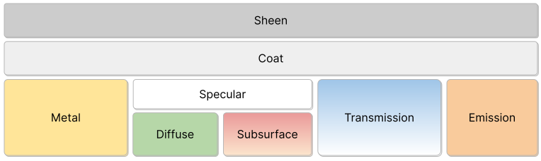

The Principled BSDF
that combines multiple layers into a single easy to use node.
It can model a wide variety of materials.
It is based on the OpenPBR Surface shading model, and provides parameters
compatible with similar PBR shaders found in other software,
such as the Disney and Standard Surface models.
Image textures painted or baked from software like Substance Painter
may be directly linked to the corresponding input in this shader.
The base layer is a mix between metal, diffuse, subsurface, and transmission components.
Most materials will use one of these components, though it is possible to smoothly mix
between them.

The metal component is opaque and only reflect lights. Diffuse is fully opaque, while
subsurface also involves light scattering just below the surface. Both diffuse and
subsurface sit below a specular layer. The transmission component includes both
specular reflection and refraction.
On top of all base layers there is an optional glossy coat. And finally the sheen layer
sits on top of all other layers, to add fuzz or dust.
Light emission can also be added. Light emits from below the coat and sheen layers,
to model for example emissive displays with a coat or dust.
Blends between a dielectric and metallic material model.
At 0.0 the material consists of a diffuse or transmissive base layer, with a specular reflection layer on top.
A value of 1.0 gives a fully specular reflection tinted with the base color,
without diffuse reflection or transmission.
Subsurface scattering is used to render materials such as skin, milk and wax.
Light scatters below the surface to create a soft appearance.
Method
Rendering method to simulate subsurface scattering.
Christensen-Burley:
An approximation to physically-based volume scattering.
This method is less accurate than Random Walk however,
in some situations this method will resolve noise faster.
Random Walk:
Cycles Only
Provides accurate results for thin and curved objects.
Random Walk uses true volumetric scattering inside the mesh,
which means that it works best for closed meshes.
Overlapping faces and holes in the mesh can cause problems.
Random Walk (Skin):
Cycles Only
Random walk method optimized for skin rendering. The radius
is automatically adjusted based on the color texture, and
the subsurface entry direction uses a mix of diffuse and
specular transmission with custom IOR. This tends to retain
greater surface detail and color and matches measured skin
more closely.
Weight
Blend between diffuse surface and subsurface scattering.
Typically should be zero or one (either fully diffuse or subsurface)
Average distance that light scatters below the surface.
Higher radius gives a softer appearance, as light bleeds into shadows and through the object.
The scattering distance is specified separately for the RGB channels,
to render materials such as skin where red light scatters deeper.
The X, Y and Z values are mapped to the R, G and B values, respectively.
Index of refraction used for rays that enter the subsurface component. This may be set to
a different value than the global IOR to simulate different layers of skin.
Directionanltiy of volume scattering within the subsurface medium. Zero scatters uniformly
in all directories, with higher values scattering more strongly forward.
For example skin has been measure to have an anisotropy of 0.8.
Controls for both the metallic component and specular layer on top of diffuse and subsurface.
Distribution
Microfacet distribution to use.
GGX:
A method that is faster than Multiple-scattering GGX but is less physically accurate.
Multiscatter GGX:
Takes multiple scattering events between microfacets into account.
This gives more energy conserving results,
which would otherwise be visible as excessive darkening.
IOR Level
Adjustment to the IOR to increase or decrease intensity of the specular layer.
0.5 means no adjustment, 0 removes all reflections, 1 doubles them at normal incidence.
This input is designed for conveniently texturing the IOR and amount of specular
reflection.
For non-metallic tints provides artistic control over the color specular reflections at normal incidence,
while grazing reflections remain white. In reality non-metallic specular reflection is fully white.
For metallic materials tints the edges to simulate complex IOR as found in materials such as gold or copper.
Amount of anisotropy for specular reflection. Higher values give elongated highlights along the tangent direction;
negative values give highlights shaped perpendicular to the tangent direction.
Transmission is used to render materials like glass and liquids, where the surface both
reflects light and transmits it into the interior of the object
Weight
Mix between fully opaque surface at zero and fully transmissive at one.
Coat on top of the materials, to simulate for example a clearcoat, lacquer or car paint.
Weight
Controls the intensity of the coat layer, both the reflection and the tinting.
Typically should be zero or one for physically-based materials, but may be textured
to vary the amount of coating across the surface.
Adds a colored tint to the coat layer by modeling absorption in the layer.
Saturation increases at shallower angles, as the light travels farther
through the medium, depending on the IOR.
Sheen simulates very small fibers on the surface.
For cloth this adds a soft velvet like reflection near edges.
It can also be used to simulate dust on arbitrary materials.
Strength of the emitted light. A value of 1.0 will ensure that the object
in the image has the exact same color as the Emission Color, i.e. make it ‘shadeless’.